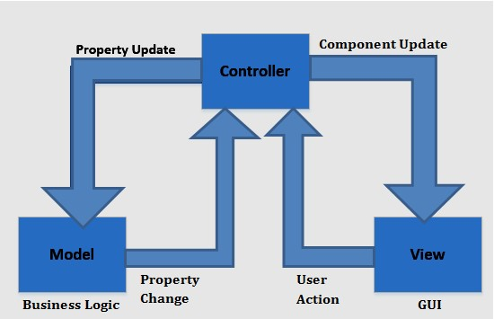

Architecture
Software architecture for this project will be three-tier architecture and will be implemented using Oracle Application Development Framework (ADF). Oracle ADF uses Model-View-Controller (MVC) framework. The front-end GUI or the View part of this application will be developed using JSF, ADF Faces and HTML-5 and the controller will be implemented using JSF and ADF Controller.
Oracle ADF architecture is based on four layers:
(1) The business Services Layer: - provides access to data from various sources and handles business logic.
(2) The Model Layer: - provides an abstraction layer on top of the Business Services layer, enabling View and Controller layers to work with different implementations of Business Services in a consistent way.
(3) The Controller Layer: - provides a mechanism to control the flow of the web application.
(4) The View Layer: - provides the user interface of the application and can be implemented using various technologies such as JSF, ADF Faces and HTML etc.

Here’s a list of other design patterns that will be used in this application:
(1) The Decorator Pattern: - The decorator pattern is a structural pattern as it defines a manner for creating relationships between classes or entities. The decorator pattern is used to extend or alter the functionality of objects at run-time by wrapping them in an object of a decorator class. This provides a flexible alternative to using inheritance to modify behaviour. The decorator pattern is used to extend the functionality of individual objects, not classes. This means that the modifications are done at run-time rather than at the design time.
(2) Factory Design pattern: The other design pattern that will be used in this project is the Factory Design Pattern. This design pattern creates objects without exposing the instantiation logic to the client and refers to the newly created object through a common interface. The factory pattern is probably one of the most used patterns. The implementation of the design pattern is really simple:
a. The client needs a product, but instead of creating it directly using the new operator, it asks the factory object for a new product, providing the information about the type of object it needs.
b. The factory instantiates a new concrete product and then returns to the client the newly created product (casted to abstract product class).
c. The client uses the products as abstract products without being aware about their concrete implementation.
We can use reflection in Java and register new vehicle reservations to the factory without having to change the factory itself. For creating objects inside the factory class without knowing the object type we keep a map between the reservation confirmation number and reservation type.
We can also implement this pattern without using reflection and still have reduced coupling between the factory and concrete objects. Since the factory should be unaware of products we have to move the creation of objects outside of the factory to an object aware of the concrete reservation classes. That would be the concrete class itself.
We will add a new abstract method in the vehicleReservation abstract class. Each concrete class will implement this method to create a new object of the same type as itself. We also have to change the registration method such that we’ll register concrete product objects instead of class objects.
abstract class VehicleReservation { public abstract VehicleReservation createVehicleReservation(); } class OneVehicleReservation extends VehicleReservation { static { VehicleRegistrationFactory.instance().registerVehicleRegistratoin("ID1", new OneVehicleReservation()); } public OneVehicleReservation createVehicleReservation() { return new OneVehicleReservation(); } } class VehicleRegistrationFactory { public void registerVehicleRegistration(String confirmationNum, vehicleReservation r) { m_RegisteredvehicleRegistration.put(confirmationID, r); } public Product createVehicleReservation(String confirmationID){ ((Product)m_RegisteredProducts.get(confirmationID)).createVehicleReservation(); } }